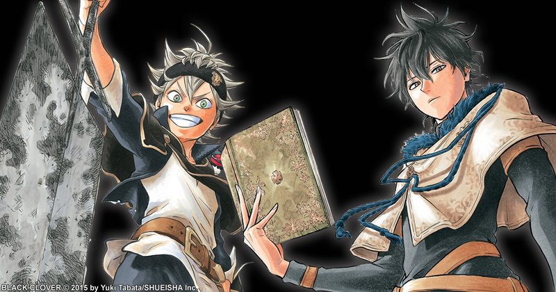

Anti-Cursed Grimoire
This is not an Innate Technique. The user has zero cursed energy and takes a specialized Heavenly Restriction path that lets them wield Anti-Cursed Tools carrying an external anti-energy Shikigami/Devil.

Anti-Cursed Grimoire
This is not an Innate Technique. The user has zero cursed energy and takes a specialized Heavenly Restriction path that lets them wield Anti-Cursed Tools carrying an external anti-energy Shikigami/Devil.
What the technique actually does.
Zero CE / Anti-Energy
The founding paradox: 0 CE maximum, forever, no gaining, stealing, storing, or spending it. The campaign Heavenly Restriction chassis supplies HP, martial dice, and movement; Anti-Energy (pool = level + PB, back on a short rest) is a different substance entirely, and never a CE reserve.
- You have 0 CE maximum and cannot gain, steal, store, or spend CE. Effects that require a CE reserve treat you as having none.
- Use the campaign Heavenly Restriction chassis for HP, martial dice, movement, and body improvements. This framework replaces only its Ideal/technique-like progression where necessary.
- Anti-Energy has a pool equal to level + proficiency bonus. It returns on a short or long rest. It is not CE and cannot fuel normal cursed techniques.
- Anti-Cursed swords are cursed tools that become blunt/ordinary against mundane flesh but exceptionally effective against CE constructs and techniques.
HR Die
The martial die from the Project class table (p. 136), scaling with level, the full progression sits in the Level 1 entry below. It is not cursed energy: with 0 CE, anti-energy abilities never spend a CE reserve. Character level governs, unless a multiclass exception is explicitly approved. The HR Die is the Heavenly Restriction martial-damage die from the Project class table (p. 136); it scales with character level, the full progression is given in the Level 1 entry below. It is not cursed energy: this character has 0 CE, and anti-energy abilities never spend a CE reserve. Use Heavenly Restriction class level when a multiclass exception is explicitly approved; otherwise your character level and class level are identical.
Field notes. Subject: a refusal the body made on its own. Three truths govern him. First, he has zero cursed energy, not a little, not suppressed: zero, and cannot gain, steal, store, or spend CE; effects requiring a CE reserve treat him as having none. Second, his power is Anti-Energy, a pool that returns on a short or long rest, spent to unmake what CE has built. Third, and strangest: the grimoire did not grant the power but recognized a vessel already empty of everything it devours, the only “technique” on record that gets stronger the less cursed energy surrounds it. Hence the maxim: he does not fight sorcerers. He evicts them.
Level 1–20 Progression
1Demon-Slayer Sword
Weapon (passive) · Heavy greatsword: 2d6 bludgeoning/slashing, +1 HR Die vs CE constructs, shikigami, barriers, or technique-created matter · Reaction · 1 Anti-Energy · Block with the flat for advantage on a save vs an external CE effect.
The instrument. The sword does not cut curses. It unmakes the premise they were built on.
HR Die progression: d6 at levels 1–4, d8 at levels 5–10, d10 at levels 11–16, d12 at levels 17–20.
3Black Form
Bonus action · 2 Anti-Energy · 1 minute · +10 speed, jump distance doubled, weapon attacks count as anti-technique · Once/turn: a hit on an active technique user forces a Concentration/Technique Focus check.
The form is not speed. It is the body’s answer to being told it had no technique.
6Demon-Dweller Sword
Melee 1d8 slashing (longsword-equivalent) · Action · 1 Anti-Energy · 60-ft anti-energy slash: ranged weapon attack, 2 HR Dice force · With a willing ally's touch, borrow one damage type or cosmetic affinity from their technique (no features).
The second sword. Even the void keeps a guest book.
9Demon-Destroyer Sword
Melee 1d6 bludgeoning/slashing (light) · Action · 2 Anti-Energy · Touch one ongoing non-Domain CE effect (curse, transformation, mark, buff/debuff, summoning link): Str/Athletics vs the source's CE DC · Success ends one effect · Cannot undo completed damage or death.
The scalpel. The sword unties what sorcerers have tied.
11Devil Union
Bonus action · 4 Anti-Energy · 1 minute, once/long rest · +20 speed, 40-ft fly, resistance to CE technique damage · Anti-cursed weapon hits suppress the target's technique reactions until your next turn.
The devil lends its shape to the one thing it cannot curse.
13Black Divider
Action · 2 Anti-Energy · Demon-Slayer lengthens into a 20-ft line/arc: one weapon attack vs each creature/construct in it · CE constructs take +3 HR Dice.
The void, extended to geometry.
15Demon-Slasher Katana
Action · 3 Anti-Energy · Selective 60-ft line: choose targets, attack only them, 5 HR Dice slashing/force per hit · Ignores mundane objects and allies.
The selective stroke. Emptiness, with manners.
18True Devil Union
Passive upgrade · Devil Union usable twice/long rest · Anti-cursed hits force a CE ability save; failure suppresses one named technique feature until the start of your next turn · Domains still require anti-domain rules.
The union deepens. Even the void knocks before entering a Domain.
20Five-Leaf Completion
Passive · Anti-Energy maximum doubles · Start combat with PB Anti-Energy if lower · Once/round: Demon-Destroyer costs 0 vs a technique of 3 CE or less · Devil Union loses its daily limit (still costs Anti-Energy).
The vessel perfected. The fifth leaf is not a new power. It is the end of rationing.
Pinnacle / Maximum
The Forbidden Tool Art: spend all remaining Anti-Energy (minimum 6), once per long rest, a 120-ft selective line, one attack against each chosen CE-bearing creature or construct, 8 HR Dice on a hit and one active Focus effect suppressed; barriers take maximum dice. He empties the vessel completely, and the emptiness answers. Forbidden Tool Art, Infinite Slash Equinox (spend all remaining Anti-Energy, minimum 6; action): 120-ft selective line, one attack against each chosen CE-bearing creature/construct; on hit 8 HR Dice force/slashing and suppress one active Focus effect. Barriers take maximum dice. Once/long rest.
Technique Feats
Anti-Magic Swordsman
His sword drinks curses aimed at others: reaction when an ally within 5 ft saves against an external CE effect, they use his save result instead. The shield is a greatsword held flat.
Bull Thrust
Dash at least 20 ft in a straight line, and a bonus action drives the anti-cursed sword into a creature moved adjacent to during the dash, one melee attack, momentum carrying the cut. The charge is the technique; the sword merely attends.
Sword Flight
He rides the Demon-Slayer or Dweller, fly speed equal to walking while Black Form is active. The void, it turns out, is a perfectly good vehicle.
Liebe's Partner
When Devil Union ends, the departing devil’s anti-magic discharges as a parting gift: reaction, end one ongoing CE effect on each hostile within 30 ft, as Demon-Destroyer, with no check required. The devil leaves the room the way it entered it: unmaking things.
Binding Rulings
Source Notes
- The fictional ability is the inspiration; all JJK 5e numbers and progression procedures are homebrew.
- Source reference
- Source reference